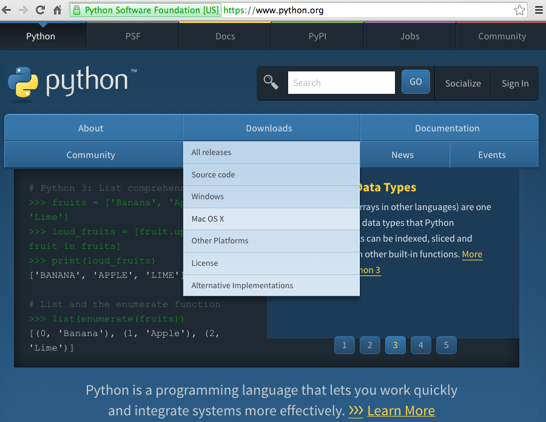
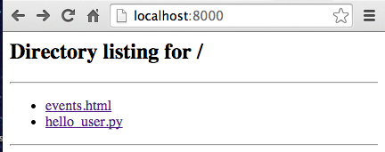
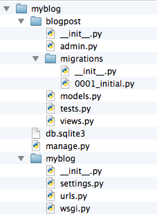

Web (Frameworks) and Django
Petri Ihantola
Python
A Brief Introduction
This self study material is not covered in lectures. Use this to recall your Python programming skills, especially if you have not done Python for a while.
More self study material
There are many great resources for learning Python available online. One of those is free book called Dive Into Python 3. For this course, chapters 0,1,2,3,4, and 7 cover most what is needed.
In addition, it's advisable to read ProgrammingBits tutorial on function decorators.
The official Python site also has a nice list of tutorials for beginners (in Python or programming in general).
Python Generally
"Python is an easy to learn, powerful programming language. It has efficient high-level data structures and a simple but effective approach to object-oriented programming. Python’s elegant syntax and dynamic typing, together with its interpreted nature, make it an ideal language for scripting and rapid application development in many areas on most platforms." The Python Tutorial
Currently there are two different versions of Python that are widely used: Python 2 and Python 3. We will use Python 3 on this course. The versions are quite similar (on the surface) but not completely compatible.
Getting started with Python

You can test if you have Python by running python3 on the command line. (python in Windows)
Running Python
There are two ways you run Python code: either by running a file containing the code: python3 hello_user.py or by just typing python3 and writing some code interactively.
Let's try both.
Comments in Python
A quick note on how comments work in Python, they are used in the coming slides
Single line comments start with # and documentation strings (multiline comments) are noted with """. That's all there is.
"""
This example illustrates comment usage in Python.
This is a multiline comment.
"""
# Assigning a value to 'name' variable
name = "Comment example" # Single line comments can live here too
# End of exampleAll the usual advice about using comments applies!
Indentation
In JavaScript blocks of code, like a function or an if-statement, were defined with curly braces. In Python there are no curly braces but blocks are defined by indentation, for example:
some_variable = True
# Since some_variable has True as a value "It's true!" will be printed
if some_variable == True:
print("It's true!")
else:
print("It's false!")Similarly indentation is used when defining functions, loops, classes etc. We'll see this in coming slides.
Because indentation plays such a crucial role in Python, a good editor is very highly recommended.
Variables
Variables are not declared, they get created by assignment statements
my_variable = 3 # create my_variable by assigning 3 to it
my_other_variable = my_variable + 1 # my_other_variable will be 4Python is dynamically typed: variables will have whatever type their value has. Errors are discovered at run-time:
a = 3.5 # a is a number
a = 'three' # a is a string
b = a + 3 # can't concat string and int
# Results in error:
# TypeError: cannot concatenate 'str' and 'int' objects (Python 2)
# TypeError: Can't convert 'int' object to str implicitly (Python 3)
Values
integer, float, string, Unicode string, Boolean (True/False, note capitalization), tuple, list, functions...
Type conversions are explictit:
a = 3.5 # a is a number
a = 'three' # a is a string
b = a+str(3) # 'three3'
str(35) #'35'
int("42") # 42
float("45.3") # 45.3
int(45.5) # 45
There is also special value None it's Python's equivalent of Null. For instance, functions without return values return None.
Strings
String literals are marked with either single or double quotes. By using triple quotes multiline strings can be created.
Raw strings are created by prefixing string literal with r. This might be quite useful later in Django URL configurations.
text = 'This is fine.'
another_text = "And so is this."
some_quote = "He said: \"It's a fine day\"." # mixing quotes
same_quote = 'He said: "It\'s a fine day".' # mixing quotes
raw_string = r'My string with \ character' # raw string
# By E. A. Poe
raven_first_verse = """
Once upon a midnight dreary, while I pondered, weak and weary,
Over many a quaint and curious volume of forgotten lore-
While I nodded, nearly napping, suddenly there came a tapping,
As of some one gently rapping, rapping at my chamber door.
"'Tis some visitor," I muttered,"tapping at my chamber door-
Only this and nothing more."
"""Strings and Slicing
Strings are concatenated with + and repeated with *.
Strings are immutable (you cannot change them).
Parts of strings can be accessed with string slicing [start:stop:step] notation.
a = "world"
b = "hello" * 3
c = b + " " + a # 'hellohellohello world'
test = 'abcdef'
test[2] # 'c'
test[2:4] # 'cd'
test[2:] # 'cdef'
test[:4] # 'abcd'
test[1:-2] # 'bcd', ignore first from beginning and two from the end
test[::2] # 'ace', take every second character
test[::-1] # 'fedcba', think about how this works
String Methods
Apart from find, which returns an int, all of these will return a new string and will not modify the original variable.
Some useful string methods (there are plenty more):
line = "Once upon a midnight dreary, while I pondered, weak and weary"
# find gives index of first instance, or -1 if not found
line.find('eary') # 23
# Replace all occurences of first argument with second argument
line.replace('eary', 'afty') #'Once upon a midnight drafty, while I pondered, weak and wafty'
# Split string into list using comma
line.split(',') # ['Once upon a midnight dreary', ' while I pondered', ' weak and weary']
# Join a list with pipe character
'|'.join(line.split(',')) # 'Once upon a midnight dreary| while I pondered| weak and weary'
# To uppercase, there is also corresponding .lower()
line.upper() # 'ONCE UPON A MIDNIGHT DREARY, WHILE I PONDERED, WEAK AND WEARY'
#strip white space from both ends
" hello ".strip() # 'hello'
About Unicode
In Python 2.x strings are limited when it comes to what characters they can contain. This is fixed in Python 3.x. You can get around the limitations by prefixing the literal with u.
# In Python 2
my_string = u'special unicode\u0020string'# In Python 3
print("Look a snowman \u2603!") # prints: Look a snowman ☃!If you want to print out to terminal, you might also need to set environment variable PYTHONIOENCODING to utf-8
>>> print("Look a snowman \u2603!")
Traceback (most recent call last):
File "<stdin>", line 1, in <module>
UnicodeEncodeError: 'ascii' codec cannot encode character '\u2603' in position 15: ordinal not in range(128)
$ export PYTHONIOENCODING=utf-8
$ python3
Type "help", "copyright", "credits" or "license" for more information.
>>> print("Look a snowman \u2603!")
Look a snowman ☃!
String Formatting
Concatenating strings (and other things) for display will make you run into unexpected TypeErrors. To avoid this problem there is a format method for strings, used as such:
>>> '{0}, {1}, {2}'.format('a', 'b', 'c')
'a, b, c'
>>> '{}, {}, {}'.format('a', 'b', 'c') # 3.1+ only
'a, b, c'
>>> '{2}, {1}, {0}'.format('a', 'b', 'c')
'c, b, a'
>>> '{2}, {1}, {0}'.format(*'abc') # unpacking argument sequence
'c, b, a'
>>> '{0}{1}{0}'.format('abra', 'cad') # arguments indices can be repeated
'abracadabra'
>>> 'Coordinates: {lat}, {long}'.format(lat='37.24N', long='-115.81W')
'Coordinates: 37.24N, -115.81W'
>>> coord = {'latitude': '37.24N', 'longitude': '-115.81W'}
>>> 'Coordinates: {latitude}, {longitude}'.format(**coord)
'Coordinates: 37.24N, -115.81W'Example from Python 3 documentation. Read more about string formatting syntax there.
Lists and Tuples
Lists are mutable collections of values and tuples are immutable collections of values. In other respects they work similarly, except trying to change contents of a tuple will result in error. Lists are noted with [] and tuples with ().
# Let's look at a list of different Pythons
pythons = ["Angolan", "Burmese", "Sumatran short-tailed "]
pythons.append("Royal") #add to the end of the list
pythons[0] # 'Angolan' indexing from zero
pythons[-1] # 'Royal' negative indices start at the end
# Slicing as with strings
pythons[2:] # ['Sumatran short-tailed ', 'Royal']
pythons[:2] # ['Angolan', 'Burmese']
pythons[1:3] # ['Burmese', 'Sumatran short-tailed ']
pythons[::-2] # ['Royal', 'Burmese'] every other in reverse order
# This will print Pythons on separate lines
for snake in pythons:
print(snake)
if "Royal" in pythons:
print("Royal is a Python")
List Methods
Some useful methods for lists:
my_list.sort() # Sorts the list
my_list.append(element) # Add element at the end of the list
# appends the other list to the end of this one
my_list.extend(other_list)
# Returns the index of element or
# throws ValueError if element is not in list
my_list.index(element)
my_list.remove(element) # removes element
# Inserts a new element to the list into the specified location
my_list.insert(location, element)
# iterating a list, more on loops in a moment
for element in my_list:
print(element)Tuples
So tuples almost work the same:
# This tuple would work similarly, except
# adding, removing, sorting, or
# any type of modification would throw an error
pythons = ("John Cleese", "Terry Gilliam", "Eric Idle",
"Terry Jones", "Michael Palin", "Graham Chapman")
for actor in pythons:
print("{0} is a brilliant actor!".format(actor))
# prints:
# John Cleese is a brilliant actor!
# Terry Gilliam is a brilliant actor!
# ... and so onTuple packing/unpacking:
dijkstra = 'Edsger Wybe Dijkstra', 1930
# variable dijkstra will be tuple: ('Edsger Wybe Dijkstra', 1930)
name, year_of_birth = dijkstra
print(name) # prints: Edsger Wybe Dijkstra
print(year_of_birth) # prints: 1930Dicts
Dictionary, or dict for short, is a mutable set of key-value pairs.
agent = {} # new empty dictionary
agent['name'] = 'James'
agent['code'] = '007'
print(agent) # prints: {'code': '007', 'name': 'James'}
print(agent['name']) # prints James
print(agent['codename']) # Will result in KeyError, there is no key 'codename'
print(agent.get('codename')) # prints None
print(agent.get('codename', 'classified')) # prints classified
# key-values can also be set when creating a dict
agent = {'name': 'James', 'code': '007'}
Useful operators: in, and, or, not
Some of these operators you've already seen:
in checks if something is a member of something else (value in a list, characters in a string)
and checks if both values are True
or checks if either of the values is True
not negates as usual (! in most languages)
if Control statements
Python has if...elif...else syntax. elif and else parts can be omitted.
some_number = 5
if some_number > 3:
print("Some number is bigger than 3")
elif some_number < 3:
print("Some number is smaller than 3")
elif some_number == 3:
print("Some number is 3!")
else:
print("You can't end up in here")
# This can be used to test if a value exists in a list
pythons = ("John Cleese", "Terry Gilliam", "Eric Idle",
"Terry Jones", "Michael Palin", "Graham Chapman")
comedian = "John Cleese"
if comedian in pythons:
print(comedian + "is a brilliant comedian!")
else:
print(comedian + " is not a member of the Pythons") in and Dicts
in operand can also be used to test if a key exists in a dictionary:
agent = {'name': 'James', 'code': '007'}
if 'codename' in agent: # Will be False, no codename in agent dict
print(agent['codename']) # Won't get executed
elif 'name' in agent:
print(agent['name']) # Prints 'James'for Loops
# Prints numbers 0,1,2,3,4 on separate lines
for i in range(5):
print(i)We already saw that for ... in structure can also be used to iterate a list:
# This will print all animals on separate lines
animals = ["dog", "cat", "mouse"]
for animal in animals:
print(animal)agent = {'name': 'James', 'code': '007'}
for key in agent:
print(key, agent[key])
# What will get printed:
# code 007
# name Jameswhile Loops
While loops work as expected: while a condition is True the loop will be executed.
user_input = ''
while user_input != "exit":
print("Type something:")
user_input = input()
if user_input == "exit":
print("You typed exit... not asking for more input")
else:
print("You typed: '{0}'. Type 'exit' to quit.".format(user_input))
Scopes
Unlike JavaScript, Python is block-scoped. Meaning that variables can be accessed if they are created in this or previous blocks. global keyword can be used to create global variables.
Good Stack Overflow question & answer regarding scoping rules
break, continue, and else in Loops
break is used to break out of a loop and continue is used to start the next iteration immediately.
for n in range(2, 10):
for x in range(2, n):
if n % x == 0:
print(n, 'equals', x, '*', n//x)
break
else:
# loop fell through without finding a factor
print(n, 'is a prime number')Example from Python 3 Documentation
Functions and def
Functions (and methods) are defined with def.
Returning values is done similarly to JavaScript with return statement.
def add(a,b):
return a+b
# could also be written as
def addLong(a,b):
result = a + b
return result
result = add(7,8)
print(result) # will print: 15Functions
Let's try to wrap up the prime number example into a function:
def prime_finder(upper_limit):
for n in range(2, upper_limit):
for x in range(2, n):
if n % x == 0:
print (n, 'equals', x, '*', n//x)
break
else:
# loop fell through without finding a factor
print(n, 'is a prime number')
prime_finder(5)
# What will get printed
# 2 is a prime number
# 3 is a prime number
# 4 equals 2 * 2Classes
Unlike JavaScript, Python has classes which are defined as such: class Name. Convention is to use a capital letter at the start of the class name.
When defining methods for a class, the reference to the instance needs to be passed as the first argument. Here the convention is to use self as the name.
class Person():
def __init__(self, first_name, last_name):
self.first_name = first_name
self.last_name = last_name
def greet(self):
return "Hi, my name is " + self.first_name
edgar = Person("Edgar", "Poe")
greeting = edgar.greet()
print(greeting) # prints: Hi, my name is EdgarClasses Another Example
You can inherit from another class giving the class name in parenthesis where you want to inherit.
An example from Django tutorial
# We will talk about imports in a moment
from django.db import models
class Question(models.Model):
question_text = models.CharField(max_length=200)
pub_date = models.DateTimeField('date published')
Special Methods?
Like we saw on the class examples, there are some special methods (sometimes also called magical methods) that start and end with two underscores, e.g. __init__
These special methods get called in certain circumstances, for example, __init__ is a constructor.
There is also, for example, __str__ method, which gets called whenever we want the string representation of the object, such as when printing.
There are many more, most are not needed on this course. Dive Into Python 3 Appendix B: Special Method Names.
Imports
You can import other modules (from Python's modules, some project, your own, etc.) with the import keyword. If you only want a specific function, you can also say from module import function.
import glob
print(glob.glob('*')) # Prints out all the files in current directory
from random import choice
print( choice([0,1,2,3]) ) # Prints either 0, 1, 2, or 3
Some Modules
Many useful builtin modules in Python, some examples:
randomrandom numbers, choicesglobunix style file/directory listingsjsonworking with json datahttpcontains many things for working with HTTP
Example use of the http module:
examples hazen$ python3 -m http.server
Serving HTTP on 0.0.0.0 port 8000 ...

Working with Files
Files are opened with builtin function open which will return a file object. Calling .close() on that object will close the file. However, recommended way to open files is with with (files get closed automatically after the block).
events_file = open('events.html', 'r')
print(events_file.readlines()[0:5])
events_file.close()
with open('events.html', 'r') as f:
print(f.readlines()[0:5])Contents of the file can by read by .read(size), .readline(), and .readlines(). Refer to the Python Docs on files for those and more.
Handling Errors
Python has try...except...[else] structure for handling errors.
for arg in sys.argv[1:]:
try:
f = open(arg, 'r')
except IOError:
print('cannot open', arg)
else:
print(arg, 'has', len(f.readlines()), 'lines')
f.close()See Python docs on Handling Exceptions and list of built-in exceptions.
CGI Example (Blast from the past)
#!/usr/bin/env python
import MySQLdb
print("Content-Type: text/html\n")
print("<html><head><title>Books</title></head>")
print("<body>")
print("<h1>Books</h1>")
print("<ul>")
connection = MySQLdb.connect(user='me', passwd='letmein', db='my_db')
cursor = connection.cursor()
cursor.execute("SELECT name FROM books ORDER BY pub_date DESC LIMIT 10")
for row in cursor.fetchall():
print("<li>{}</li>".format(row[0]))
print("</ul>")
print("</body></html>")
connection.close()Example (slightly modified) from Django Book (which sadly is outdated at the moment).
What are Web Application Frameworks?
"In computer programming, a software framework is an abstraction in which software providing generic functionality can be selectively changed by additional user-written code, thus providing application-specific software." Wikipedia
"A web application framework (WAF) is a software framework that is designed to support the development of dynamic websites, web applications, web services and web resources. The framework aims to alleviate the overhead associated with common activities performed in web development." Wikipedia
Library vs. Framework
What's the difference between frameworks and libraries?
e.g., frameworks provide/force structure for the whole application and in return provide functionality and ease of use of some 'mundane' tasks.
Frameworks' design philosophy impacts more. Design of libraries will only affect how you call out the functionality.
Good discussion on the topic from Stack Overflow
Separation of Concerns
"... 'the separation of concerns', which, even if not perfectly possible, is yet the only available technique for effective ordering of one's thoughts, that I know of. This is what I mean by 'focusing one's attention upon some aspect': it does not mean ignoring the other aspects," E.W. Djikstra
Wikipedia has a worthwhile article about it as well.
Model-View-Controller
Model-View-Controller (or MVC) is a pattern used in software architecture used for interactive software/application.
The application is created from three components which have different responsibilities.

Model (MVC)
Model maintains the state of the application, it holds the data. In the web application context typically the data is stored in a database(s).
Model is used to abstract away the database-centric stuff. This is typically done using Object-Relational-Mapper (ORM). It maps the data in the database to objects and conversely maps objects to database entries.
Any restrictions to the data are defined in the model... and it takes care of validating, so that incorrect data does not end up in the database.
View (MVC)
The concern of the view is to generate the user interface. In web applications this means producing HTML usually by using a templating language.
Data is acquired from the Model (typically via Controller) and mixed with HTML using templating language.
View can (and often does) format the data to suit the requirements of that particular view. It answers questions like: what is to be displayed? how should it be displayed? etc.
Controller (MVC)
Controller decides which views to use based on user input and data from the models.
Controller can be interpreted in many ways and in the simplest case it only selects the views.
In a broader interpretation it handles more of the business logic (utilizing models and what rules they enforce).
Django Framework
"The Web framework for perfectionists with deadlines" Django
Django on The Course
The latest version of Django is 1.10
For automatically assessed exercises, we will use version 1.10 with Python 3
Why Django? It offers nice amount of functionality and "forces" writing applications in a particular way. It is powerful and flexible and it is quite a "traditional" web framework as well.
The world is full of frameworks. Wikipedia has listed some for many languages.
Model-Template-View
Model-Template-View (MTV) is a variation of the MVC pattern.
Django uses this:
'In our interpretation of MVC, the “view” describes the data that gets presented to the user. It’s not necessarily how the data looks, but which data is presented. The view describes which data you see, not how you see it. It’s a subtle distinction.' Django FAQ about MVC
MTV and Django
In Django's MTV, the role of the model is the same as in the typical MVC.
Templates are just called that in Django, they produce the final HTML presented to the user by combining given HTML elements and data.
Views get the user input (HTTP request), they access the necessary models (and perhaps include some additional logic), and then pass the data to the template.
The template is rendered and returned to the user.
The role of the 'traditional' controller can be viewed in django as the whole framework + URL-routing (urls.py)
MTV and Django

django-admin.py
django-admin.py startproject my_first_project this will create a new folder with specific file structure called my_first_project and importantly creates a manage.py script, which is used to do various tasks related to the project:
python manage.py migratecreates the database schemapython manage.py runserver [port]starts a development serverpython manage.py startapp appnamecreates an app for the projectpython manage.py helplists out all the nice things manage.py can do for you
Structure of a Django Project

The project 'myblog' contains an app called 'blogpost' which has various Python files which we'll look at next. There is also a nested 'myblog' directory that contains some important files.
urls.py
This routes URLs to Django functions (typically defined in views.py).
from django.conf.urls import patterns, include, url
from my_app.views import welcome_page
from django.contrib import admin
urlpatterns = patterns('',
url(r'^$', welcome_page, name='welcome'), # ^$ matches empty path
url(r'^admin/', include(admin.site.urls)),
)
'Some people, when confronted with a problem, think, "I know, I'll use regular expressions." Now they have two problems.' More humor
views.py
views.py (naming convention) files contain views that get requested through the urls.py. For example:
from django.http import HttpResponse
def welcome_page(request):
return HttpResponse("Hello, world. Welcome to this page")Using a template and render shortcut:
from django.shortcuts import render
def latest_posts(request, amount):
posts = BlogPost.objects.all().order_by('-pub_date')[:amount]
context = {'blog_posts': posts}
return render(request, 'blog/index.html', context)Templates
Templates have some predefined HTML and they get some data from the view (which gets it from the model).
<!DOCTYPE html>
<html>
<head>
<title>Welcome</title>
</head>
<body>
<h1>Welcome to {{ system_name }}!</h1>
</body>
</html>
settings.py
This is the main configuration file for the project which can be extended by local settings files.
Some of the important settings contained in it: installed apps, database settings, where templates are loaded, and much more.
Generating HTML without Templates
It is possible but highly unadvisable!
Think about the following code:
def current_datetime(request):
now = datetime.datetime.now()
html = "<html><body>It is now {}.</body></html>".format(now)
return HttpResponse(html)
How does that relate to separation of concerns and maintainability?
Templating Languages
The main idea is to separate the presentation from the data.
They offer many benefits, such as:
- Flexibility - designers can work on templates while coders work on code
- Maintainability - loose coupling. Presentation can be reworked completely without touching the underlying logic
- Typically easier than coding - non-coders (think designers, ux specialists) can work on them as well
Django Templates
Templates in Django can generate HTML/XML/JSON and other formats.
They use a templating language that mixes its own tags with the parent languages (e.g. HTML) tags.
They have a minimal set of control constructs (looping, branching) and any actual logic should be coded in views.
They have template inheritance to keep up with the DRY-principle.
{{ variable }}
{# comment #}
{% programming logic %}Templates - Variables
Double curly brackets denote a variable in templates. The values are filled in the view. If the variable is a dict/list/object etc., dot notation can be used to access its members.
Variables can also be preprocessed before they are included in the document. Filters are marked with: | filter_name & params, e.g.:
{# escapes special characters in urls #}
{{ userprovided_url | urlencode }}
{# e.g. http://www.google.com -> http%3A//www.google.com #}Templates - Comments
Two ways:
{# self commenting #}
{% comment %}
This is commented out.
{% endcomment %}
Templates - if and for
Can be used to test presence of a variable with {% if variable %}.
{% if condition %}
If condition evaluates to true this will get rendered.
{% else %}
Otherwise this will get rendered.
{% endif %}
{% ifequal a b %}
{{a}} and {{b}} are equal
{% else %}
{{a}} and {{b}} are NOT equal
{% endif %}
{% for item in collection %}
Collection (e.g. list) contains {{item}}.
{% endfor %}
For a complete list of tags and filters refer to Django Documentation.
Templates - Workflow
Following steps describe how templates are rendered:
- Fetch a template
- Prepare data in Context object
- Render template with the data
- Return rendered template as an HttpResponse
def congratulate_page(request):
template = get_template("congratulations.html") # 1.
variables =
Context( { "name" : "Matti", "username" : "iceman" } ) # 2.
output = template.render(variables) # 3.
return HttpResponse(output) # 4.There is a render shortcut for this.
Object-Relational-Mapper ORM
Most of the data in a Django application is in objects that have a number of instance variables (that can also reference other objects).
Data is stored in tables in relational databases that are not designed to contain objects.
Object-Relational-Mapper is designed to bridge this gap. It converts objects to a form that can be stored relational database. And similarly, fetches data from the database and transforms that data back into objects.
Models in Django
The first step is to describe models in Python code (typically in app/models.py). The following example defines two models:
from django.db import models
class Student(models.Model):
name = models.CharField(max_length=30)
student_number = models.CharField(max_length=6)
group = models.ForeignKey(ProjectGroup)
class ProjectGroup(models.Model):
name = models.CharField(max_length=30)
project_deadline = models.DateField()Django ORM
Once you've defined some models you can run python3 manage.py makemigrations appname and then python3 manage.py sqlmigrate which will give the corresponding SQL query to create the necessary tables.
BEGIN;
CREATE TABLE "student_projectgroup" ("id" integer
NOT NULL PRIMARY KEY AUTOINCREMENT, "name" varchar(30)
NOT NULL, "project_deadline" date NOT NULL);
CREATE TABLE "student_student" (
"id" integer NOT NULL PRIMARY KEY AUTOINCREMENT,
"name" varchar(30) NOT NULL, "student_number" varchar(6) NOT NULL,
"group_id" integer NOT NULL
REFERENCES "student_projectgroup" ("id")
);
CREATE INDEX
student_student_0e939a4f ON "student_student" ("group_id");
COMMIT;Model-View-Controller
Model-View-Controller (or MVC) is a pattern used in software architecture used for interactive software/application.
The application is created from three components which have different responsibilities.